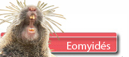
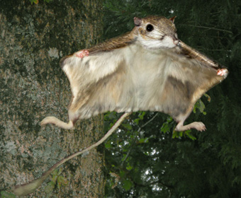

|
  |
||
 |
|
||
 Schématiquement, le modèle des dents repose sur de petites fosses séparées par des cloisons d’émail réparties symétriquement dans la largeur de la dent. Il existe évidemment de nombreuses variations autour de ce thème. La dent présentée ici répond à peu près à ce schéma mais les fosses ont fusionné (plus de cloisons d’émail). Seul le contour de la grande fosse rappelle la présence des fosses du modèle de base. La variabilité des dents chez les eomyidés a déjà été documentée et il est vraisemblable qu’on ait à faire à une molaire sans crête d'émail dans le bassin de la dent. Pour lever le voile... Les Eomyidés constituent une famille éteinte de rongeurs qu’on a pu rencontrer dans les paysages européens depuis le milieu de l’Eocène jusqu’à la fin du miocène.  Ces rongeurs ont été très peu signalés dans les sables des faluns et à l’exclusion de Ligerimys aux Beilleaux, la famille n’est jamais mentionnée dans la faune des faluns d’Anjou Touraine.
Poussières de tamis... |
|||